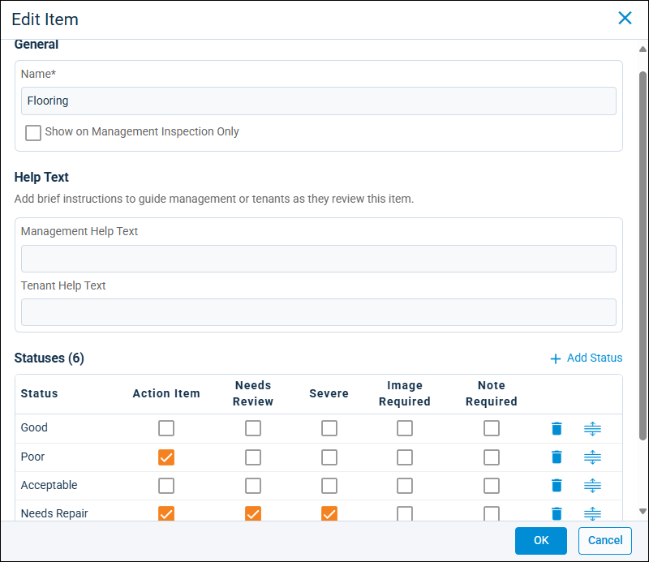
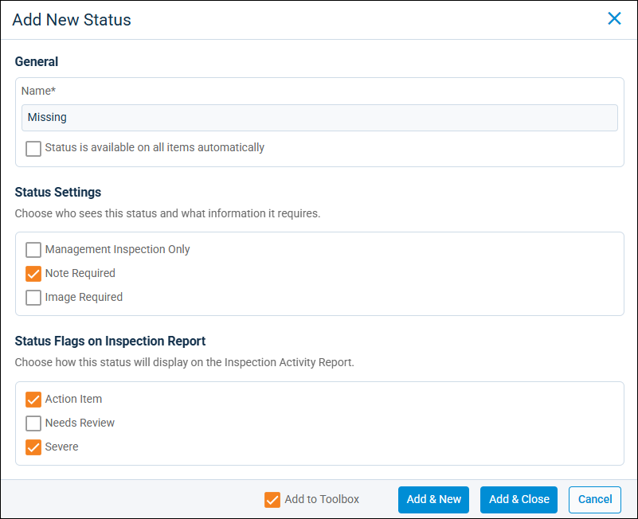
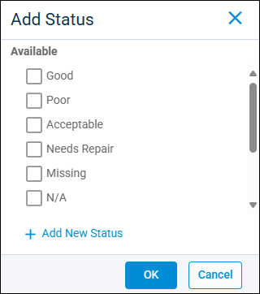

Source: https://rmxhelp.rentmanager.com/Topics/Express/KB/Inspection-Status-Add.htm
Add an Inspection Status
Rent Manager inspections streamline and standardize the inspections process by customizing it to fit your needs. Your customizations can be saved as inspection templates, which allow you to create new inspections from the same starting point. You can have multiple templates, allowing you to create unique inspections with consideration to property, unit, or unit type.
To ensure you record the most accurate information on what needs to be inspected, Rent Manager allows you to create item statuses. Statuses help you determine if further action needs to be taken on an inspection item (e.g., Poor, Needs Repair, Missing), or if the item is ready to be completed (e.g., Good, Acceptable). Statuses can be added to inspection templates from scratch, or by selecting an existing, template-wide status and copying that information.
Related Preferences
Inspections is a licensed feature and must be purchased separately. For more information, contact your sales representative at sales@rentmanager.com.
Once the feature is licensed, it must be activated before you can use the Inspection feature in the app. For more information, refer to rmAppSuite Inspection (System Preferences).
Related Privileges
| Group | Privilege | Column |
|---|---|---|
| Inspections | Inspection Statuses | Add |
| Inspection Templates | View, Edit |
For more information, refer to Control User Access.
More Information
Unlike inspection areas and items, statuses can be added only to inspection templates. Before starting an inspection, ensure you've added item statuses to your inspection templates.
Add a New Status
To add a new item status to an inspection template, do the following:
-
Go to
 arrow_forward Services arrow_forward Inspections arrow_forward Inspection Templates and select a template.
arrow_forward Services arrow_forward Inspections arrow_forward Inspection Templates and select a template.
The inspection template's details page displays. -
In the Areas section, on the item you wish to add a status to, click
 and select Edit.
and select Edit.
-
In the Statuses section, click
 Add Status.
Add Status.
The Add Status pop-up displays. -
Click
Add New Status to create an item-specific status that is available only when the item is added to an inspection.
-
In the General section, enter a Name (e.g., Good, Poor, Acceptable, Needs Repair, etc.) for the status.
-
In the Status Settings section, select the visibility and additional requirements for this status. Each option is described in the table below.
Item Description Image Required
When this item status is selected, the inspector or tenant must upload at least one image of the item to the Images section.
Management Inspection Only
This item status displays only on inspections performed by Rent Manager users and is not available for tenant self-inspections.
Note Required
When this item status is selected, the inspector or tenant must enter at least twenty characters to the Notes section for the item to explain its condition.
-
In the Status Flags on Inspection Report section, select how this status displays on the Inspection Activity report. For more information, refer to Inspection Activity Report. Each option is described in the table below.
Item Description Action Item
Indicates the item needs to be addressed immediately before the inspection can be considered complete. Items with this status are included in the report's # of Action Items column.
Needs Review
Indicates the item needs to be reviewed by the inspector or a service tech to ensure that it is fixed or replaced before the inspection can be considered complete. Items with this status are included in the report's # of Review Needed Items column.
Severe
Indicates the item is either completely broken or has been removed from the unit or property. Items with this status are included in the report's Severe Items column.
-
To add the new status to your toolbox, making it available for all items and inspection templates, click Add to Toolbox . For more information, refer to Edit an Inspection Template Toolbox.
-
Click Add & New and repeat steps 3-5 for as many statuses as needed to complete the item.
-
When you are satisfied with the information you have entered, click Add & Close.
The item status is added to the inspection template.
Add an Available Status to a Template
If you already created template-wide item statuses, you can save time by using the  Add Status option to add any of those statuses and edit them as needed to be specific for that inspection template.
Add Status option to add any of those statuses and edit them as needed to be specific for that inspection template.
To add an existing available item status to an inspection template, do the following:
-
Go to
arrow_forward Services arrow_forward Inspections arrow_forward Inspection Templates and select a template.
The inspection template's details page displays. -
In the Areas section, on an item, click
and select Edit.
The Edit Item pop-up displays. -
In the Statuses section, click
Add Status and select any applicable status from the Available list.
-
Click OK.
The pop-up closes and any statuses selected are added to the template item. -
When you are satisfied with the item's information, click Save.
Any statuses selected are added to the inspection template item.